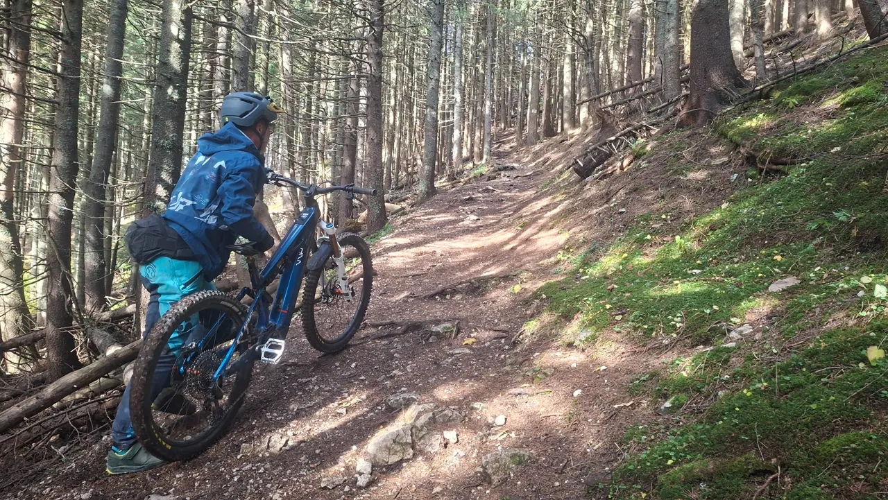
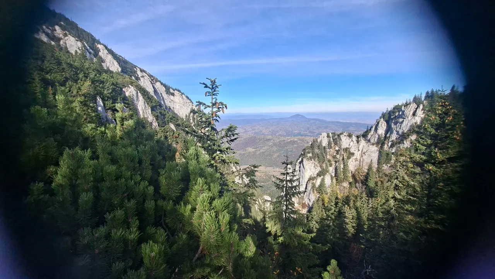
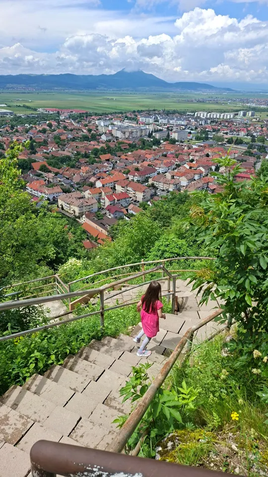

Galerie foto
Câteva momente de pe traseu. Alege o fotografie ca să o vezi de aproape.
 Transilvania mai puțin cunoscută
Transilvania mai puțin cunoscută Peisaje de la sat
Peisaje de la sat Plimbări cu mașina pe drumuri de munte
Plimbări cu mașina pe drumuri de munte Pe două roți
Pe două roți Seara pe dealuri
Seara pe dealuri Pe potecă
Pe potecă Castelul Bran
Castelul Bran Prăpăstiile Zărneștiului
Prăpăstiile Zărneștiului Plimbări călare
Plimbări călare Aventuri cu bicicleta electrică
Aventuri cu bicicleta electrică La masă
La masă Drumuri de munte
Drumuri de munte
Prin obiectivul meu Prin obiectivul meu
Prin obiectivul meu
Prin obiectivul meu Prin obiectivul meu
Prin obiectivul meu Prin obiectivul meu
Prin obiectivul meu
Prin obiectivul meu Prin obiectivul meu
Prin obiectivul meu Prin obiectivul meu
Prin obiectivul meu Prin obiectivul meu
Prin obiectivul meu Prin obiectivul meu
Prin obiectivul meu Prin obiectivul meu
Prin obiectivul meu Prin obiectivul meu
Prin obiectivul meu Prin obiectivul meu
Prin obiectivul meu Prin obiectivul meu
Prin obiectivul meu